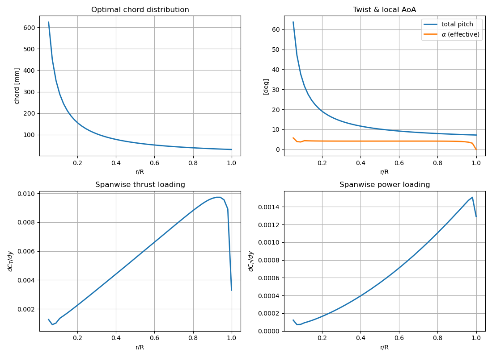
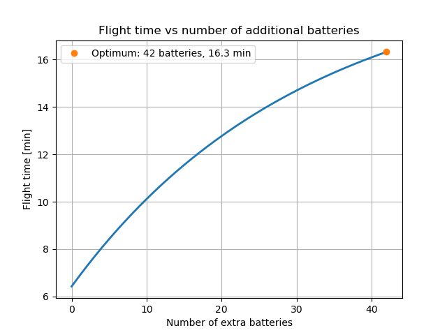
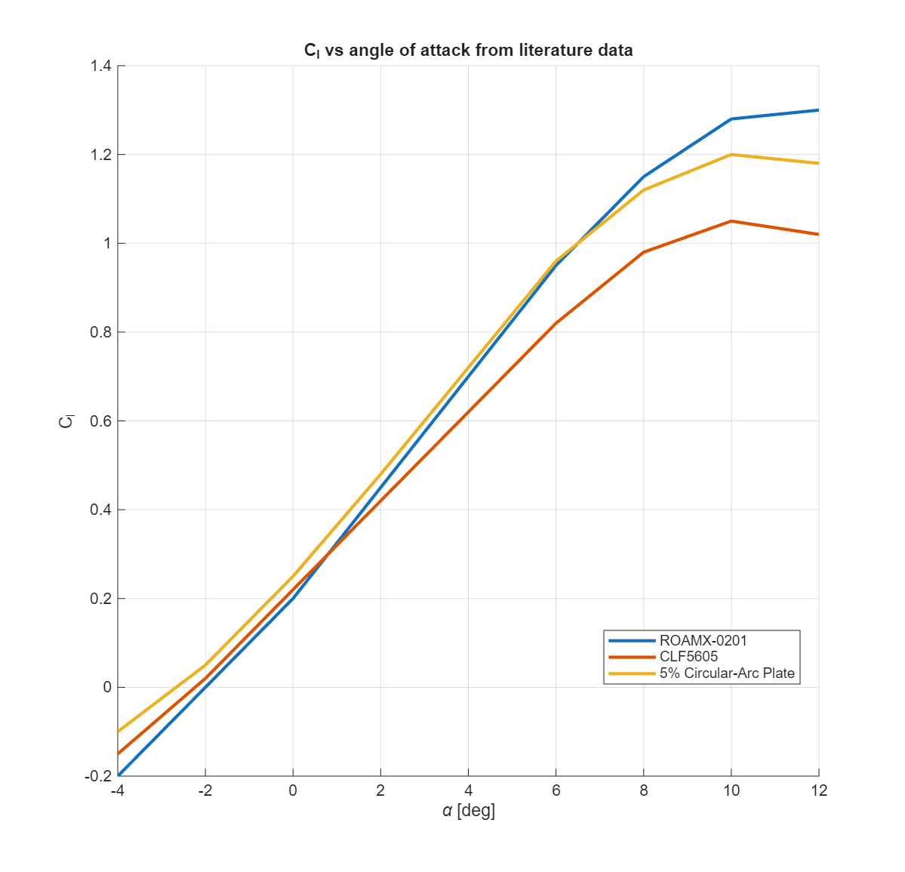
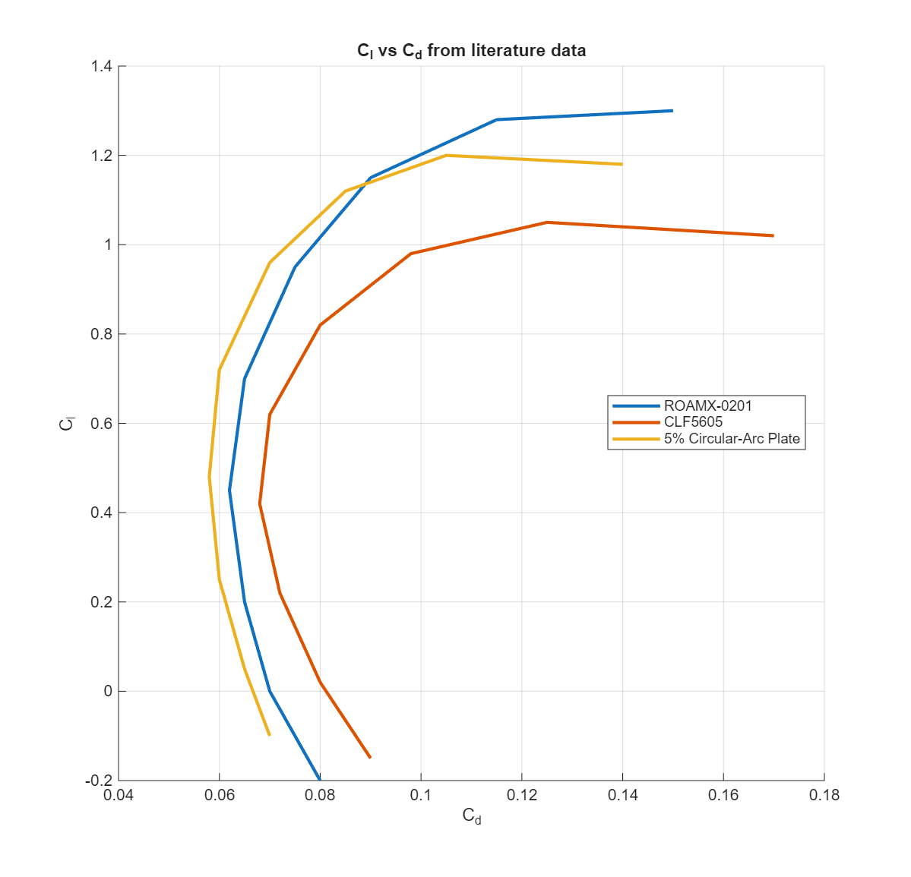
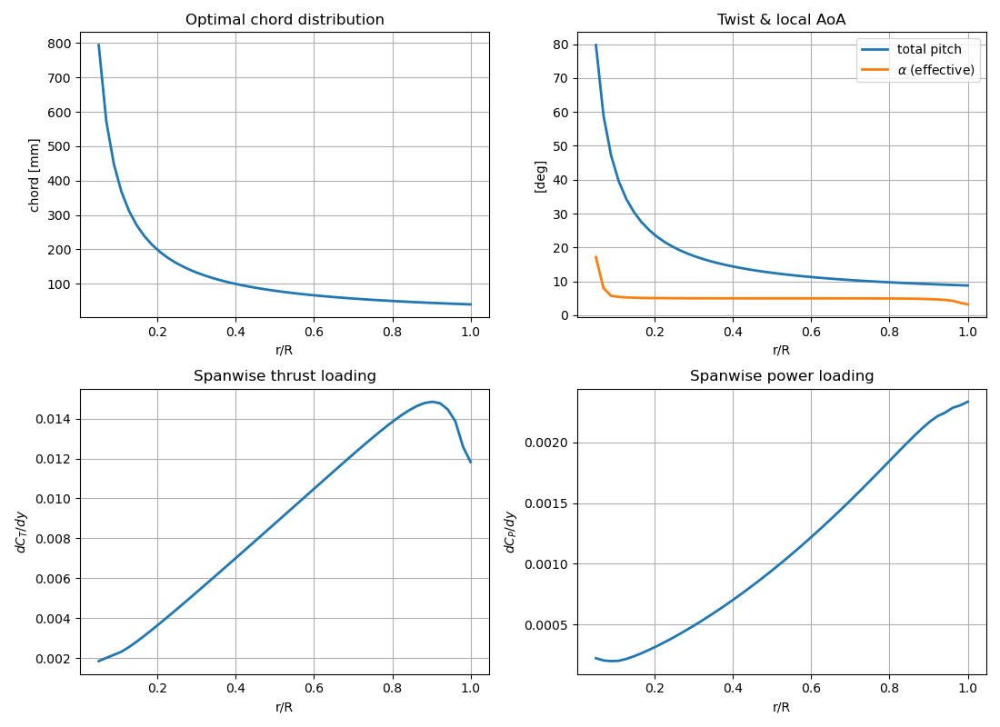
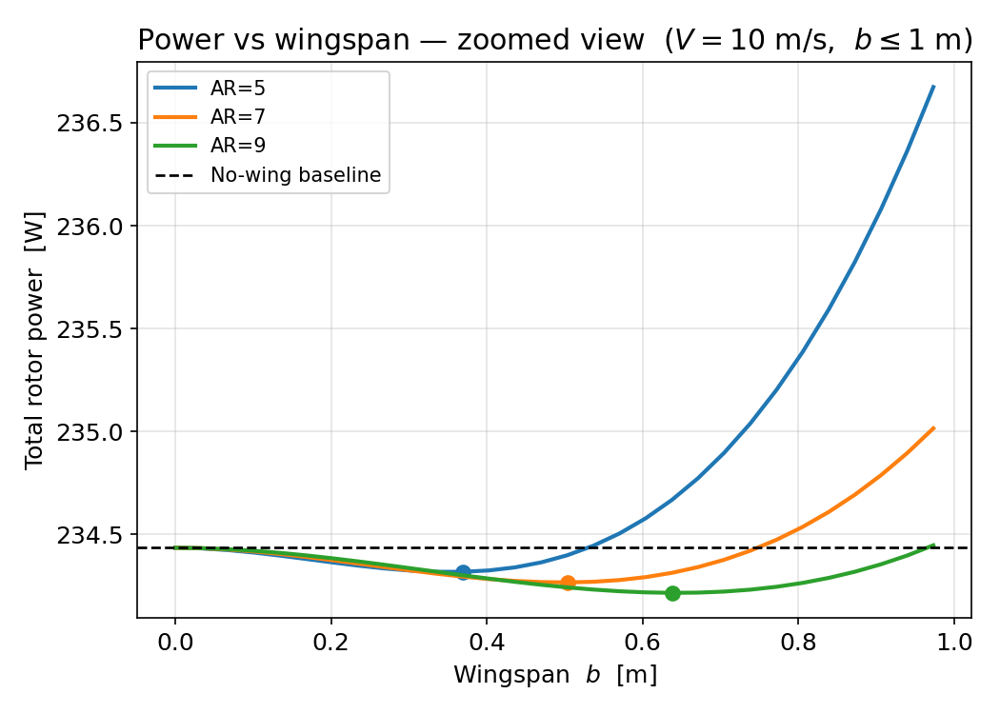
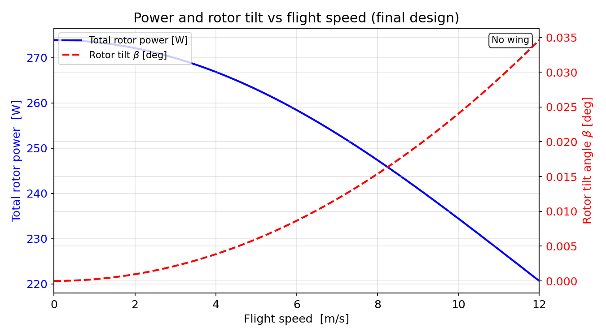

Ingenuity Legacy

May 2026
Exam: 27 May
On 19 April 2021, NASA's Ingenuity helicopter became the first powered aircraft to fly on another planet, completing 72 flights before a rotor failure ended its mission in January 2024. The thin Martian atmosphere — just 1.6% of Earth's density — makes flight extremely challenging: rotors must spin at high RPM to generate lift, and the very-low Reynolds-number regime fundamentally changes airfoil aerodynamics.
This project develops the first conceptual aerodynamic design for a next-generation Mars UAV capable of carrying a 2 kg payload, spanning hover power estimation, configuration selection, airfoil optimisation, and forward-flight wing analysis.
Momentum theory applied to Ingenuity's coaxial counter-rotating rotor system. The lower rotor operates in the upper rotor's wake (interference factor f = 0.5). A constant effective chord c̄ = 0.071 m is derived from the published blade area.
Pi = κ · T · vi → Pi,u = 1.15 × 3.357 × 8.61 = 33.3 W
Lower rotor in upper wake (f = 0.5): Pi,l = 20.6 W → Pl,total = 43.7 W
Ingenuity peaks at ≈ 360 W total (rotor + computer + heating). The simplified model underestimates real power but establishes a valid design baseline.
Two configurations evaluated for hover with 2 kg payload. A coupled mass–power model scales Ingenuity's component weights (blades, motors, fuselage) with rotor radius and power. Optimal radius minimises total hover power.
Component Mass Relationships| Weight | Ingenuity | Proposal |
|---|---|---|
| Rotors | 70 g | 29.167 g/m |
| Motors | 250 g | 2.5 Ptot g |
| Structure | 300 g | 0.2 mno-struct g |
| Battery | 280 g | 500 g |
| Computer | 900 g | 1000 g |
P₀ = 178.7 R⁴ [W, Mars, same Ω]
mtot = 1.2(1500 + 29·R·Nb·Nrot + 2.5·Ptot) [g]

| Variable | Two Rotors | Four Rotors ✓ |
|---|---|---|
| Radius | 0.64 m | 0.53 m |
| Blades | 2 | 2 |
| Structure | 2.40 kg | 2.77 kg |
| Power Consumption | 328.2 W | 274.6 W |
| Flight Time | 3.66 min | 4.7 min |
The 2 kg payload is replaced with extra battery cells (mcell = 47 g, Ecell = 10/6 Wh). Two competing effects: more cells → more energy and more mass → higher power demand.

Optimum sits exactly at the payload mass limit — adding batteries always helps in this configuration.
| Configuration | Energy | Power | Flight time |
|---|---|---|---|
| Original battery only | 20.0 Wh | 274.6 W | 4.4 min |
| + 42 battery cells | 90.0 Wh | 274.6 W | 19.7 min |
| Airfoil | Cl,max | Low-Re behaviour | Type |
|---|---|---|---|
| ROAMX-0201 | > 1.3 | Smooth, stable | Mars-optimised |
| 5% circular-arc | ~ 1.1 | Robust laminar | Thin plate |
| CLF5605 | ~ 0.9 | Higher drag | Ingenuity blade |


BEM theory with Prandtl tip-loss corrections. Nelder-Mead optimizer (SciPy, 50 elements) minimises hover power over tip chord ctip, design AoA αD, collective pitch θ, and Ω.

| Quantity | Momentum Theory | BEM (Task 5) |
|---|---|---|
| Power per rotor | 68.7 W | 107.7 W |
| Total quad power | 274.6 W | 430.8 W |
| Thrust per rotor | — | 4.27 N ✓ |
veff = V sin β + vi (Glauert, iterated to convergence)
LLT: e = 1/(1+δ), δ = Σn≥2 n(An/A1)² → e = 0.988 (AR 9, −3° washout)


| Result | Value |
|---|---|
| No-wing forward-flight power (V = 10 m/s) | 234.4 W |
| LLT-optimal planform | Rect., AR = 9, −3° washout, e = 0.988 |
| Best achievable power reduction | 0.09% (target: 10%) |
| Density for 10% reduction | ρw ≤ 7.0 kg/m³ — unachievable |
| Final design decision | Bare quadcopter — no wing added |
- Task 1 Ingenuity total rotor power ≈ 100 W via momentum theory — establishes the design baseline.
- Task 2 Quadcopter selected: 16% lower hover power (275 W vs. 328 W) and 28% longer flight time than twin-rotor.
- Task 3 42 extra batteries → 19.7 min (up from 4.4 min, 4.5×). Optimal at payload mass limit.
- Task 4 ReMars ≈ 1.8×104 (36× below Earth). ROAMX-0201 selected for best low-Re performance.
- Task 5 BEM gives 107.7 W/rotor — ~1.6× momentum estimate — due to tip and profile losses.
- Task 6 Wings impractical on Mars (q = 1.0 Pa); max 0.09% reduction. Final design: bare quadcopter, Pfwd = 234 W at V = 10 m/s.